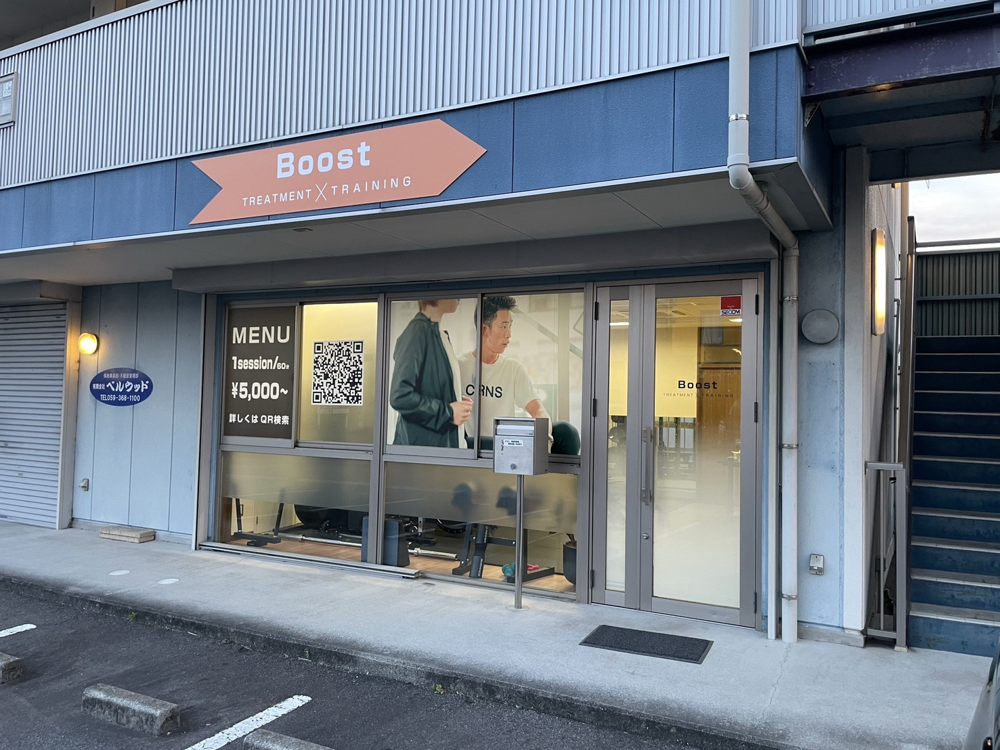
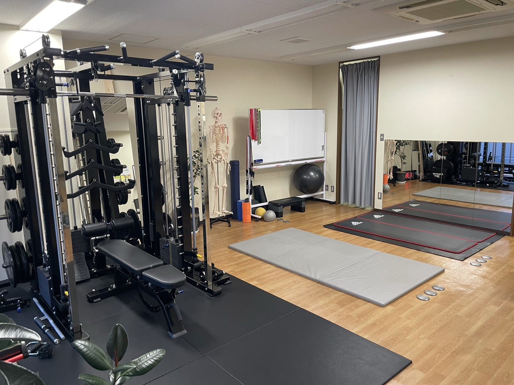

なぜ“施術でつくる”のか
形だけでなく機能を整えることで、ラインは持続します。短期的な変化と長期的な定着、両方を目指します。
💡
原因を特定
前捻・脛骨外旋・骨盤傾斜・足部内外反などを評価し、ラインを崩す根本因子を明確化。
🧠
神経–筋膜–関節
皮神経の滑走、筋膜ライン、関節拘縮に段階介入。痛みなく安全に可動を引き出します。
📈
再現性の高い手順
評価→介入→再評価のループをテンプレ化。誰でも同じ結果に近づける手順を提供。
セミナー概要
- 対象 セラピスト、パーソナルトレーナー、美容・エステ従事者
- 形式 １日集中（８時間）
- 内容 評価・徒手アプローチ・セルフケア指導・ケーススタディ
- 特典 復習動画有

カリキュラム
施術で作る美脚美尻アプローチ
― 整えて・通して・動かす “下半身美” の再現メソッド ―
🕐 1dayセミナー（全8時間／昼休憩1時間）
1
第1部：美脚美尻の定義と理論（1.5h）
目的：「美しさの構造」を理解し、施術と動作の統合イメージを持つ
- 美脚美尻の定義（構造美・機能美・循環美）
- 醜い脚・尻とは？（歪み・偏り・停滞）
- 下半身ラインの3軸
- 1. 骨格軸（骨盤〜膝〜足部）
- 2. 筋膜軸（外側ライン・内側ライン）
- 3. 重心軸（体幹との統合）
- 美尻と美脚の関係性：「殿筋主導 vs 腸腰筋主導」
- 施術 × トレーニングで変化を“固定化”する理論
2
第2部：崩れの原因を見抜く評価（1.5h）
目的：形の乱れを動き・感覚・構造から総合的に評価
- 美脚崩壊パターン：O脚／X脚／XO脚／外もも張り／反張膝
- 美尻崩壊パターン：垂れ尻／骨盤前傾／骨盤後傾／腰椎過伸展
- 評価技法
- 立位ライン評価（前額／矢状／後面）
- ASIS-膝蓋骨-第2趾の連動軸
- ヒップヒンジ／スクワット動作チェック
- 触診による張力バランス確認
- 評価→アプローチのマッピング
3
第3部：施術による整え（実技①／足部〜骨盤）（2h）
目的：“関節誘導×筋膜リリース×循環促進”で下半身ラインを整える
- 足部：距骨・舟状骨・立方骨・踵骨リリース
- 下腿：腓骨・後脛骨筋・ヒラメ筋・長腓骨筋
- 大腿：外側広筋・大腿筋膜張筋・内転筋群
- 骨盤：腸腰筋・中殿筋・梨状筋・深層外旋筋
- 骨盤の求心位調整（大腿骨頭の誘導）
- Before／Afterチェック（ライン・可動・荷重）
🍱
昼休憩（1h）
4
第4部：動作連動による定着（実技②／高精度トレーニング）（1.5h）
目的：施術で作ったラインを、脳と筋出力で再学習させる（“誰でもできる”ではなく“構造を理解した人だけができる”再現型トレーニング）
- コンセプト：動かしながら整える
- 骨盤×股関節の協調を高める：ヒップヒンジ・ペルビックローテーションドリル
- 大腿外側張りを解消する：内転筋主導ランジ＋ハムリフト制御
- 殿筋下部を引き上げる：大殿筋下線維主導ヒップスラスト／ニーアダクション・ヒップエクステンション連動
- 足底・膝・股関節の統合トレーニング：トライポッド・スクワット（足底感覚統合法）
- 呼吸×骨盤運動で中枢連動再教育：リブケージコントロール＋ドローイン
5
第5部：症例別アプローチとまとめ（1.5h）
目的：臨床現場で即応用できるパターン別アプローチを構築
- 症例別アプローチ
- ① O脚＋外もも張りタイプ
- ② X脚＋内転筋短縮タイプ
- ③ 骨盤前傾＋反り腰タイプ
- ④ 骨盤後傾＋垂れ尻タイプ
- 各タイプ別の施術＋トレーニング組み合わせ（評価 → 施術 → トレーニング → 定着）
- “その場で変わる”＋“戻らない身体”の作り方
- セルフ指導の落とし込み方（クライアント教育）
- 質疑応答
講師
原口慶篤
パーソナルジムTHEORY 代表
14歳の頃に筋トレを始めたのがきっかけでトレーナー業界に興味を持つ。専門学校卒業後→鍼灸整骨院に就職し、そこでトレーナー・整体師として二足の草鞋生活がスタート。もっと知識が欲しくて2019年専門学校に再入学。
学生のまま2020年に独立し、コンディショニングを武器にHP無し広告無し口コミ紹介のみでリピート客が後を絶たない。
他のトレーナーとは違う異色な経歴と独自に編み出したゼロ調整技術で様々な身体の問題を解決する。現在は企業研修4社の身体のプロにコンディショニング等の技術指導をしている。
開催情報・価格
- 日程 １２月２０日（土曜日）
- 会場 鈴鹿市中旭が丘1-6-25
- 定員 １２名
- 受講料 早割￥55,000‐（通常価格：￥77,000‐）
復習動画付き
資料配布


よくある質問
初心者でも参加できますか？
基本評価から丁寧に解説します。実務経験が浅い方でもご参加いただけます。
持ち物はありますか？
動きやすい服装、筆記用具をご用意ください。オイル等は会場で用意します。
返金ポリシーは？
開催7日前まで全額返金。以降は事務手数料を差し引いてのご対応となります。